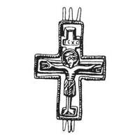
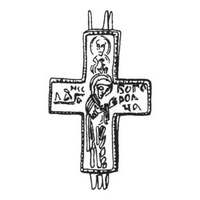

Catalog › CE-0950 · KOR2003-II.4.3.2
Encolpion întreg cu Răstignire pe față și Maica Domnului Agiosoritissa pe revers, cu inscripții
sec. prima jumătate XIII (1201–1250) · Ovruci, gubernia Volînia (azi regiunea Jîtomîr), Ucraina
double-sided reliquary cross (enkolpion), aramă; c. prima jumătate XIII (1201–1250); found at Ovruci, gubernia Volînia (azi regiunea Jîtomîr), Ucraina.




Identificare
- Categorie
- Encolpion bivalv (relicvar)
- Material
- Aramă
- Tehnică
- Turnare în relief
- Stare
- Întreagă
- Dimensiuni
- Î 57 × L 42 mm
Iconografie
- Avers
- Neidentificat
- Descriere avers
- Bordurile de la marginile valvelor sunt dințate. Imaginea Răstignirii; deasupra capului lui Hristos, o cruce cu patru capete cu litere în încrucișare.
- Revers
- Maica Domnului Orantă; Neidentificat
- Descriere revers
- Imagini în relief ale Maicii Domnului Agiosoritissa în picioare, întoarsă spre stânga, cu mâinile ridicate în rugăciune, și ale unui sfânt (până la piept) pe capătul de sus al valvei; pe capetele laterale, în stânga și dreapta imaginii Maicii Domnului, inscripții.
- Inscripții
- СХС (față, în tăbliță); [НК]/ЛА/[ ]А, БОГО/РОДН/ЧА (revers)
- Limba
- Slavonă
Datare și atribuire
- Datare
- sec. prima jumătate XIII (1201–1250)
- Centru
- Necunoscut
- Tipologie
- Korzukhina–Peskova 2003, tip II 4 3
Descoperire
- Localitate
- Ovruci
- Regiune
- gubernia Volînia (azi regiunea Jîtomîr)
- Țară
- Ucraina
- Context
- Biserică / mănăstire
Păstrare și referințe
- Bibliografie
- G. F. Korzukhina, A. A. Peskova, Древнерусские энколпионы. Нагрудные кресты-реликварии XI–XIII вв., Sankt-Petersburg, 2003 [Korzukhina–Peskova 2003], p. 99, cat. nr. II 4 3/2, reprodusă la Табл. 47 (planșe, p. 289). Bibliografie citată în sursă: Леопардов 1891а, табл. I 8, IV 8; Корзухина, архив ф. 77, д. 15, л. 126.
- Figura
- Табл. 47
- Planșe
- Korzukhina–Peskova 2003, Табл. 47 (planșă fără paginație proprie în PDF; p. 289 tipărită)
- Observații
- Datare după Peskova: sec. prima jumătate XIII. Circumstanțe: Găsit în ruinele bisericii Sf. Vasile. Locul de păstrare necunoscut. Inscripții (turnate?) adâncite. Inscripția de pe față citită „СХС” (după tipar). Desen de G. F. Korzuhina pe planșă. Coordonate: nu sunt date în sursă.
Citare: Corpus Encolpiorum, CE-0950, Encolpion întreg cu Răstignire pe față și Maica Domnului Agiosoritissa pe revers, cu inscripții, https://vitaliejosanu1979-ux.github.io/primul-meu-proiect/piese/KOR2003-II.4.3.2/ (accesat 2026-10-17).